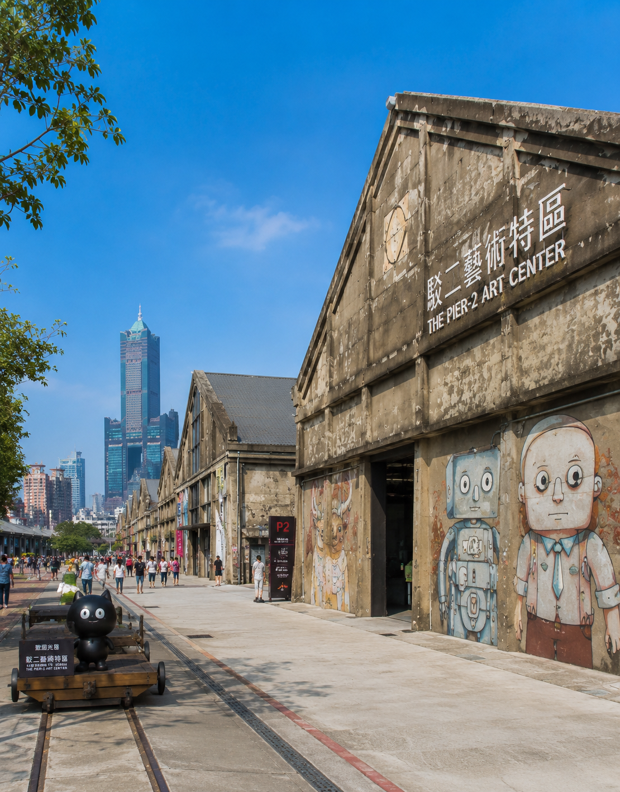
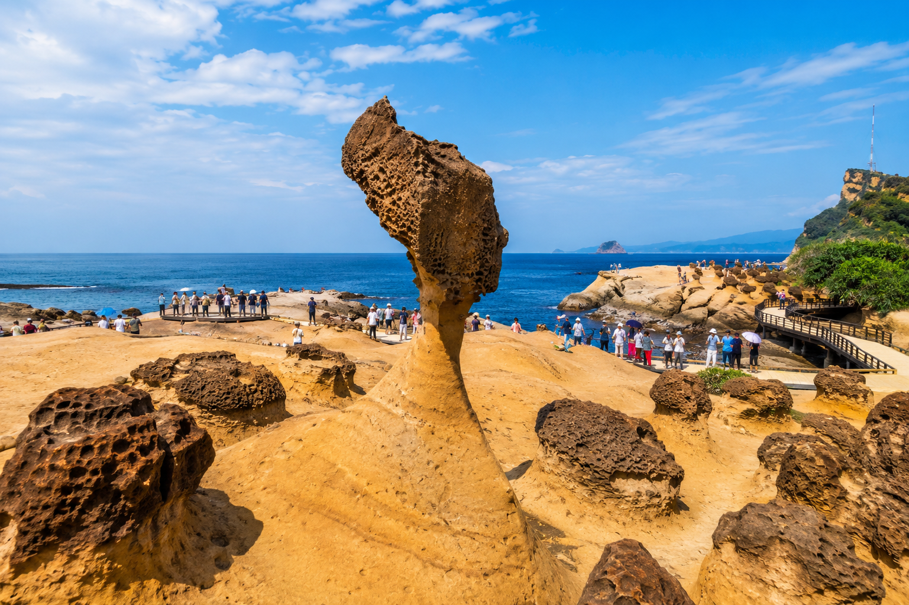

台灣風景收集中
日月潭（位於台灣中部的南投縣魚池鄉）
日月潭位於台灣中部南投縣魚池鄉，是台灣面積最大的天然湖泊，以湖光山色與原住民文化聞名。湖泊北半部形似太陽、南半部形似月亮，因此得名「日月潭」。
駁二藝術特區(位於高雄市鹽埕區)
原本是舊港口倉庫區，後來經過改造後成為結合藝術、文化與創意的熱門景點。園區保留了原有的工業風建築，並加入許多藝術裝置與展覽空間，吸引許多年輕人與遊客前來參觀。
(駁二藝術特區內有許多特色展覽、市集與文創商店，也常舉辦音樂活動與藝術展演。遊客除了可以欣賞藝術作品外，也能在園區內拍照打卡，感受充滿創意與活力的氛圍。)

野柳地質公園（位於新北市萬里區）
是台灣著名的自然景點之一，以特殊的海岸地形與奇岩怪石聞名。由於長期受到海水侵蝕與風化作用，形成許多獨特的岩石景觀，吸引大量遊客前來參觀。
